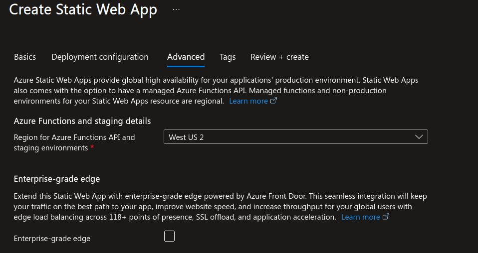

Recently at work I found out that configuring and securing a static web app in azure cloud is not so straightforward as I thought it would be. I had to research a lot using Microsoft documentation/ learn pages, YouTube tutorials and prompting many public LLMs.
To spare me and you the future hassle, I am documenting this process. This process works as of august 2025, but might change in the future.
If you follow the order in the post, you should have no problem securing your web app with Azure Active Directory.
Things to workthrough
Lets assume, you have already created a react based static web application with remote GIT repository either in GitHub or Azure DevOps.
I will walkthrough both AzureDevops and GitHub based deployment using their respective CI/CD pipeline definitions.
Step 1-Your source code
Create a static web app configuration json file in the root folder of your web application named staticwebapp.config.json with the following content.
Only update / replace <TENANT_ID> in the json below with your Azure Tenant ID.
You do not need to update / replace the AZURE_CLIENT_ID or the AZURE_CLIENT_SECRET_APP_SETTING_NAME values in json. These are configured directly in Azure.
{
"routes": [
{
"route": "/*",
"allowedRoles": ["authenticated"]
}
],
"responseOverrides": {
"401": {
"statusCode": 302,
"redirect": "/.auth/login/aad"
}
},
"auth": {
"identityProviders": {
"azureActiveDirectory": {
"registration": {
"openIdIssuer": "https://login.microsoftonline.com/<TENANT_ID>/v2.0",
"clientIdSettingName": "AZURE_CLIENT_ID",
"clientSecretSettingName": "AZURE_CLIENT_SECRET_APP_SETTING_NAME"
}
}
}
}
}That is all that is needed in the source code. Azure will parse and deploy your web app correctly and restrict it to only allocated users in your tenant.
Commit code
Choose either Github or AzureDevops as your version control tool and commit your changes containing the staticwebapp.config.json file.
This step will also contain all the prerequiste steps of creating a repository or project (Azure Devops) etc.
Step 2 - Configuration in Azure
Creating a static web app
Choose subscription
Choose the resoruce group
Give your app a unique name
Choose Standard Plan type to allow for custom authentication
Choose the code source
A caveat here is that if you choose to use Azure Devops git repository, then choose
Other. This is because Azure for some reason does not create any pipeline like it does with Github. So we rather useotherand create a starter pipeline ourselves in Azure DevOps.Important Note : Microsoft does not provide Azure Active Directory authentication if you choose the free tier. Custom authentication is only supported in the Standard tier of a static web app. So choose Standard here
In the deployment option use the deployment configuration
In Advanced Configuration choose a region close to you 
Add relevant tags and click on
Review + create
After static web app is live
This step is only needed if you use Azure Devops repository. Skip this if you are using Github
Navigate to your Azure Static Web App click on
Overviewside bar menu. Click onManage deployment tokentab to open up a token window and copy theDeployment token.
Setting up App Registration
Create new app registration via
App RegistrationsWe can also add a redirect uri while creating the app registration. We will add more redirect uri this later in this step.
The name of the app registration and the redirect uri can be changed even after creating the app registration.
Navigate to the
Authenticationsidebar menu and set theloginandlogoutcallback urls. In theRedirect URI ConfigurationtabWe must now set some callback uri’s which will redirect the user to login and logout of the application.
https://yoursite.azurestaticapps.net/.auth/login/aad/callbackhttps://yoursite.azurestaticapps.net/.auth/logout/aad/callbackRead more about why and how we should configure these callback urls here
Select the
SettingstabCheck the option
ID tokens (used for implicit and hybrid flows)Check the option
Accounts in this organizational directory only (Default Directory only - Single tenant)Create a secret to be used as
AZURE_CLIENT_SECRET_APP_SETTING_NAMEin the static web app (enviornment variable)
Note down / copy the secret value for later use.
Note down / copy the
Application IDfrom the overview page.
Setting enviornmental variables in the static web app
- Navigate to your static web app and choose
Environment variablesfrom the left menu bar. - Click on
AddwriteAZURE_CLIENT_IDas key and paste the value ofApplication IDfrom the previous step. - Click on
AddwriteAZURE_CLIENT_SECRET_APP_SETTING_NAMEas key and paste the value of the secret from the previous step.
I have also had success by just adding the value to the AZURE_CLIENT_ID= Application ID and leaving the AZURE_CLIENT_SECRET_APP_SETTING_NAME = value empty.
In my opinion, this is a better way to configure your static app since you do not need to add the secret’s value as an environment variable.
Now we have provided values to the placeholders in the staticwebapp.config.json file.
Step 3 - Configuration in version control
Azure devops
Create a starter CI pipeline and link it to the required repository and branch in your Azure Devops project
trigger: - dev # Choose the branch pool: vmImage: 'ubuntu-latest' steps: - task: AzureStaticWebApp@0 inputs: app_location: "/" # Root of your app source code api_location: "" # Location of API source code if any output_location: "build" # Location of build output folder or dist azure_static_web_apps_api_token: $(deployment_token) # Deployment token stored as secret or pipeline variableChoose which git branch should trigger the CI/CD pipeline
Create a pipeline variable and name it
deployment_token.In the value, paste the
deployment_tokenyou copied from the overview page of your Azure static webapp
Github
This is the content of the yaml file created automatically by Azure when we choose github as code source while creating the static web app.
CREATEDBYAZURESTATICWEBAPPAUTOMATICALLY string is a placeholder below, which Azure is responsible for creating.
Azure automatically sends a commit to Github and creates a file .github\workflows\AUTOMATICNAME.yaml in your code repository with the following actions.
name: Azure Static Web Apps CI/CD
on:
push:
branches:
- main
pull_request:
types: [opened, synchronize, reopened, closed]
branches:
- main
jobs:
build_and_deploy_job:
if: github.event_name == 'push' || (github.event_name == 'pull_request' && github.event.action != 'closed')
runs-on: ubuntu-latest
name: Build and Deploy Job
steps:
- uses: actions/checkout@v3
with:
submodules: true
lfs: false
- name: Build And Deploy
id: builddeploy
uses: Azure/static-web-apps-deploy@v1
with:
azure_static_web_apps_api_token: ${{ secrets.CREATEDBYAZURESTATICWEBAPPAUTOMATICALLY }}
repo_token: ${{ secrets.GITHUB_TOKEN }} # Used for Github integrations (i.e. PR comments)
action: "upload"
###### Repository/Build Configurations - These values can be configured to match your app requirements. ######
# For more information regarding Static Web App workflow configurations, please visit: https://aka.ms/swaworkflowconfig
app_location: "/" # App source code path
api_location: "" # Api source code path - optional
output_location: "dist" # Built app content directory - optional
###### End of Repository/Build Configurations ######
close_pull_request_job:
if: github.event_name == 'pull_request' && github.event.action == 'closed'
runs-on: ubuntu-latest
name: Close Pull Request Job
steps:
- name: Close Pull Request
id: closepullrequest
uses: Azure/static-web-apps-deploy@v1
with:
azure_static_web_apps_api_token: ${{ secrets.CREATEDBYAZURESTATICWEBAPPAUTOMATICALLY }}
action: "close"
If you followed along, you should now have a secure static web app hosted in Azure!
Resources
Microsoft Documentation
YouTube videos
Build a website using Azure Static Web Apps and Authenticate with AAD
Quarto With Authentication Is Easier Than You Think (with Azure)